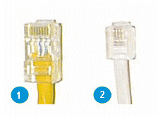
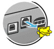
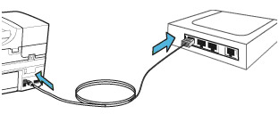

123 HP Officejet Pro 8210 Driver software
Vista, Windows 7 / 8 & Windows 10
Before downloading and installing the software, ensure that the USB cord is detached from the printer and the computer.
Internet Explorer
- Click on the Download button.
- Click on the Run button, in case a new pop-up window appears.
(Please note that, based on your connection speed, the file will take some time to get transferred to the computer) - Click on the Yes or Continue button, in case a “User Account Control” pop-up window opens.
- Proceed as per the instructions displayed on the screen.
(Please note that if the file is compressed, then it may take some time for it get extracted and run on your computer)
Firefox
- Click on the Download button.
- Click on the Save File button, when a new pop-up window opens.
- After the download gets completed, double-click on the most recent file in order to begin the software installation.
- Click on the OK button, in case an “Open Executable File?” pop-up window opens.
- Click on the Yes or Continue button, in case a “User Account Control” pop-up window opens.
(Please note that if the file is compressed, then it may take some time for it get extracted and run on your computer) - Proceed as per the instructions displayed on the screen.
Driver Installation for MacOS
The instructions provided here is for HP Printers with full feature downloadable drivers for OS X and MacOS. Connect you HP Ojp 8210 and install software and full feature print drivers.
Step 1 – Connecting the HP Ojp 8210
When your printer is connected through USB to your computer
- Search for printers in your Mac and then click on Print & Scan, Print & Fax or Printers and Scanners in the search results.
- Click on Ojp 8210 and then click on the minus sign to get it removed from the queue.
- Detach the printer USB cable from your Mac.
Preparing for the connection
- You should have a switch, hub or network router with Ethernet ports available on them.
- Ensure that the computer is connected to the switch, hub or network router.
- Please us an Ethernet cable. A standard telephone cable should not be used.

- Ethernet cable – Connector will be wide and have eight wires
- Telephone cable (should not be used) – Connector will be narrow and will have between two and six wires
Connecting your Ojp 8210 to the network
- Switch on the printer.
- Any protective cover or plug should be removed from the Ethernet port. This port will be found in the rear of the printer.
- One end of the Ethernet cable should be connected to the printer port. Now, connect the other end of the cable to a port on the switch, hub or network router.

123 HP SETUP OFFICEJET PRO 8210 DRIVER INSTALLATION
- Switch on the printer.
- If your Ojp 8210 is connected through USB to your computer, then detach the USB cable from the computer.
- Go to HP’s software and driver download page.
- When prompted, choose a method to select your printer model and proceed as per the instructions displayed on the screen.
- Click on Download near HP Easy Start or near the full feature driver (based on the option that is displayed).
- To begin the installation, open the full feature driver .dmg file or the HP Easy Start file from the Downloads folder.
- Proceed as per the instructions displayed on the screen to set up the Ojp 8210 printer connection and install the printer software.
- When the installer prompts, click on Add Printer in order to create a print queue on your Mac.
- The Add window will open.
- Click on the name of your printer (HP Ojp 8210)and then click on the Print Using or Use menu. Now, choose the name of your printer in the pop-up menu that displays and click on Add.
- Go back to the HP installer in order to complete the installation process.
Feel free to contact our HP Technical Support Team Call Us Toll-free number 1-844-968-2988, if the issue persists still, or refer our website for step by step manual.